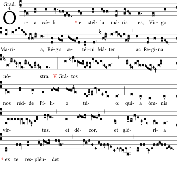
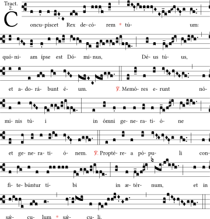
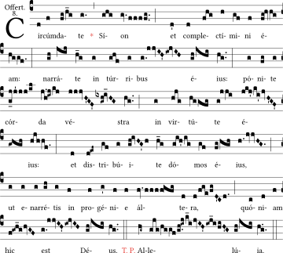

Omnípotens et miséricors Deus, qui ad defensiónem pópuli polónici in beatíssima Vírgine María perpétuum auxílium mirabíliter constituísti, eiúsque sacram Imáginem Claromontánam solémni fidélium veneratióne insígnem reddidísti: † concéde propítius; ut tali præsídio muníti, certántes in vita, * victóriam de hoste malígno cónsequi valeámus in morte. Per Dóminum.
Ego diligéntes me díligo, et qui mane vígilant ad me, invénient me. Mecum sunt divítiæ et glória, opes supérbæ et iustítia. Mélior est enim fructus meus auro et lápide pretióso, et genímina mea argénto elécto. In viis iustítiæ ámbulo, in médio semitárum iudícii, ut ditem diligéntes me et thesáuros eórum répleam. Dóminus possédit me in inítio viárum suárum, ántequam quidquam fáceret a princípio. Ab ætérno ordináta sum et ex antíquis, ántequam terra fíeret. Nondum erant abýssi et ego iam concépta eram. Nunc ergo, fílii, audíte me: Beáti, qui custódiunt vias meas. Audíte disciplínam et estóte sapiéntes et nolíte abiícere eam. Beátus homo, qui audit me, et qui vígilat ad fores meas quotídie, et obsérvat ad postes óstii mei. Qui me invénerit, invéniet vitam et háuriet salútem a Dómino.
Post Septuagesimam, omissis Allelúia et Versu sequenti, dicitur:
Tempore Paschali omittitur Graduale et eius loco dicitur:
Allelúia. V. Ave María. 6.
In illo témpore: Núptiæ factæ sunt in Cana Galilǽæ: et erat Mater Iesu ibi. Vocátus est autem et Iesus, et discípuli eius ad núptias. Et deficiénte vino, dicit Mater Iesu ad eum: Vinum non habent. Et dicit ei Iesus: Quid mihi et tibi est, múlier? nondum venit hora mea. Dicit Mater eius minístris: Quodcúmque díxerit vobis, fácite. Erant autem ibi lapídeæ hýdriæ sex pósitæ secúndum purificatiónem Iudæórum, capiéntes singulæ metrétas binas vel ternas. Dicit eis Iesus: Impléte eas usque ad summum. Et dicit eis Iesus: Hauríte nunc, et ferte architriclíno. Et tulérunt. Ut autem gustávit architriclínus aquam vinum factam, et non sciébat unde esset, minístri autem sciébant, qui háuserant aquam: vocat sponsum architriclínus, et dicit ei: Omnis homo primum bonum vinum ponit: et cum inebriáti fúerint, tunc id, quod detérius est; tu autem servásti bonum vinum usque adhuc. Hoc fecit inítium signórum Iesus in Cana Galilǽæ: et manifestávit glóriam suam, et credidérunt in eum discípuli eius. Credo.
Pro religiónis christiánæ triúmpho hóstias placatiónis tibi, Dómini, immolámus: quæ ut nobis proficiant, opem auxiliátrix Virgo præstet, per quam talis perfécta est victória. Per Dóminum.
Præfatio de B. Maria Virg. Et te in Festivitáte.
Adésto, Dómine, pópulis, qui participatióne Córporis et Sánguinis tui reficiúntur: ut, sanctíssima tua Genitríce auxiliánte, ab omni malo et perículo liberéntur, et in omni ópere bono custodiántur: Qui vivis.